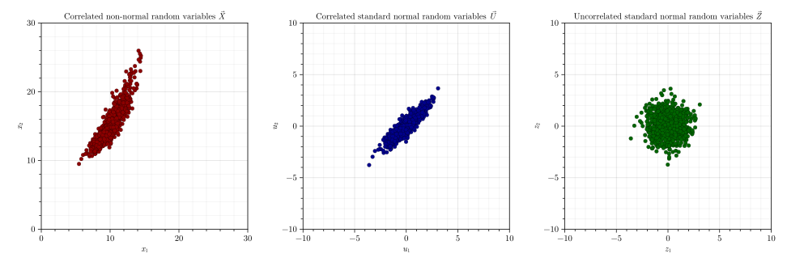

Sampling Random Variables
Fortuna.jl package allows to easily generate samples of both uncorrelated and correlated random variables using samplerv() function using different sampling techniques. Current version of the package implements Inverse Transform Sampling (ITS) and Latin Hypercube Sampling (LHS) techniques.
Sampling Random Vectors with Uncorrelated Marginal Random Variables
# Generate a random vector X with uncorrelated marginal random variables X₁ and X₂:
X₁ = generaterv("Gamma", "M", [10, 1.5])
X₂ = generaterv("Gumbel", "M", [15, 2.5])
X = [X₁, X₂]# Generate 3 samples of the random vector X using Inverse Transform Sampling technique:
XSamplesITS = samplerv(X, 3, ITS())3×2 Matrix{Float64}:
10.3759 12.0114
9.05844 12.1698
8.72324 14.5828# Generate 3 samples of the random vector X using Latin Hypercube Sampling technique:
XSamplesLHS = samplerv(X, 3, LHS())3×2 Matrix{Float64}:
12.2258 12.1049
9.8314 16.4194
8.43177 13.7277Fortuna.samplerv — Methodsamplerv(Samplers::Union{<:Distribution,Vector{<:Distribution}}, NumSamples::Integer, SamplingTechnique::AbstractSamplingTechnique)The function returns samples of random variables and random vectors with uncorrelated marginal random variables using various sampling techniques.
- If
SamplingTechnique = ITS(), the function generates samples using Inverse Transform Sampling technique. - If
SamplingTechnique = LHS(), the function generates samples using Latin Hypercube Sampling technique.
Sampling Random Vectors with Correlated Marginal Random Variables
# Generate a random vector X with correlated marginal random variables X₁ and X₂:
X₁ = generaterv("Gamma", "M", [10, 1.5])
X₂ = generaterv("Gumbel", "M", [15, 2.5])
X = [X₁, X₂]
# Define the correlation matrix:
ρˣ = [1 0.90; 0.90 1]
# Perform the Nataf Transformation by defining a "NatafTransformation" object:
NatafObject = NatafTransformation(X, ρˣ)
# Generate 1000 samples of the random vector X in X-, Z-, and U-spaces:
XSamples, USamples, ZSamples = samplerv(NatafObject, 1000)
Fortuna.samplerv — Methodsamplerv(Object::NatafTransformation, NumSamples::Integer)This function generates samples of random variables in $X$-, $Z$-, and $U$-spaces using a NatafTransformation object.
- $X$-space - space of correlated non-normal random variables
- $Z$-space - space of correlated standard normal random variables
- $U$-space - space of uncorrelated standard normal random variables